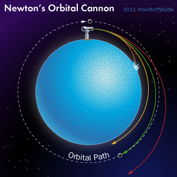
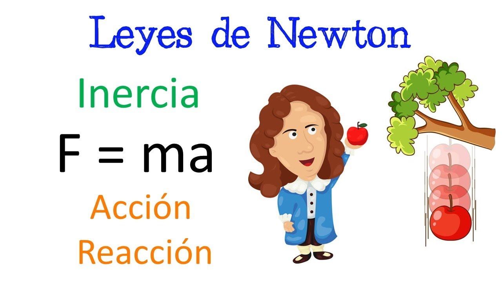
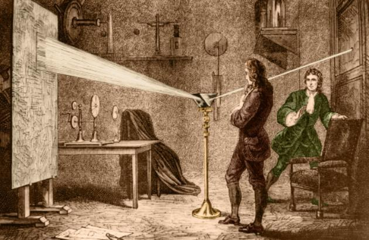
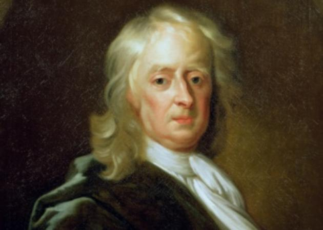

Afortunadamente para la ciencia y para la humanidad, Newton registró sus hallazgos y experiencias en varias obras que aún se conservan.
Principios matemáticos de la filosofía natural (1687)
Su obra más destacada es Philosophiae Naturalis Principia Mathematica (Principios matemáticos de la filosofía natural) publicada en 1687, también conocida por Principia. En este trabajo de tres volúmenes o libros, Newton estableció las leyes del movimiento, la ley de gravitación universal y la derivación de las leyes del movimiento planetarios de Kepler.
Óptica (1704)
Óptica, originalmente titulado Optiks, también conocido como Tratado de las reflexiones, refracciones, inflexiones y colores de la luz, fue publicado en 1704. En este trabajo presenta el resultado de sus investigaciones sobre la luz y la óptica.
Aritmética universal (1707)
Arithmetica Universalis, o Aritmética universal en español, es un libro de matemática basado en las notas de las clases de matemática de Isaac Newton. Este libro fue publicado en 1707 por William Whiston, sucesor de Newton en la posición de profesor lucasiano.
Método de las fluxiones (1736)
Método de las fluxiones y series infinitas, cuyo título original es Method of Fluxions, es una obra completada en 1671, pero publicada en 1736. En ella, Newton desarrolló el cálculo, siendo fluxions lo que hoy se conoce como derivadas.
Inventos mas relevantes de issac newton
Invento
Nombre
Informacion
Mas informacion

El cañón orbital
En su primera publicación, en 1687, Newton elabora su teoría sobre la ley de gravitación universal. Allí describe que todas las partículas ejercen una fuerza que la gravedad, siendo afectada por la masa y la distancia, universalmente comanda los movimientos de todas las cosas, desde la lluvia en la Tierra a la órbita de los planetas. Más tarde A.Einstein actualizaría algunos detalles en la visión de Newton partiendo de una base moderna pero sólida, para así comprender mejor la gravedad.
Para probar esta teoría, Newton inventó el cañón orbital en un experimento muy simple en el que, en teoría, se busca demostrar que un objeto orbita a otro. Dependiendo de la cantidad de pólvora que se le coloque a un cañón, al ser disparado, la bala puede caer nuevamente a la superficie de la Tierra o flotar en el espacio exterior.
Puertas para mascotas
Así es, Isaac Newton fue quien inventó las puertas para gatos y perros, así que si alguna vez te lo preguntaste pero te pareció demasiado simple como para ponerte a investigar al respecto, aquí lo tienes. Al parecer, cuando el gran Newton no estaba pensando en cañones espaciales o en cómo el universo se mantiene orbitando, se las ingeniaba pensando en la comodidad y el bienestar de sus numerosas mascotas.

Las 3 leyes del movimiento
Inercia: todo cuerpo preserva en su estado de reposo o movimiento rectilíneo uniforme a no ser que sea obligado a cambiar su estado por fuerzas impresas sobre él.
Fuerza: el cambio de movimiento es proporcional a la fuerza motriz impresa y ocurre según la línea recta a lo largo de la cual aquella fuerza se imprime.
Acción y reacción: con toda acción ocurre siempre una acción igual y contraria: o sea, las acciones mutuas de dos cuerpos son siempre iguales y dirigidas por sentido opuesto.
La receta de la piedra filosofal
Como alquimista y filósofo, Isaac Newton, durante años estudió distintos mitos, relatos, textos e investigaciones sobre la llamada piedra filosofal. Como hombre de ciencia, quizá llame la atención que Isaac se dedicara a este tipo de estudios, sin embargo, la gran mayoría de los textos relacionados con la alquimia del 1600, realmente fueron el aperitivo de la química.

El arco iris y la refracción de la luz
En 1704, en su obra titulada Óptica, Newton cambió la forma en la que se habla y se trabaja sobre la luz, así como del fenómeno de la refracción. Aunque los científicos de la época ya sabían cómo se forma un arcoíris (mediante el reflejo y la refracción de la la luz en las gotas de lluvia) no sabían a qué se debían esos colores tan llamativos.

Otros inventos de Isaac Newton
Inventó una teoría sobre el apocalipsis y el fin de la humanidad mediante el estudio de la biblia y otros documentos bajo su carácter como teólogo, definiendo la fecha del fin del mundo como para el año 2060 o más adelante.
Inventó una teoría sobre el estado de enfriamiento con una serie de experimentos en el año 1700 que hoy en día, permite la refrigeración de absolutamente todas las cosas y que utilizamos a diario en nuestros refrigeradores, incluso, en reactores de seguridad nuclear y en naves de exploración espacial.
Inventó monedas que no podían ser falsificadas. La falsificación era un problema muy grande en la Inglaterra de finales de 1600 y llegaba incluso a incidir en la crisis económica del país.
Definición de la gravedad
Teorías y leyes del movimiento
Inventó el cálculo
Sentó las bases de la ciencia moderna con Principia
Descubrió el teorema binomial generalizado
Definió la forma de la tierra
Definición de la óptica
Identificó la luz como la fuente de la sensación de color